Team 1 Ryan Slatten, Dominick Perini, Stefan Moritz Fall 2020 ECE 4554/5554 Computer Vision: Course Project Virginia Tech
Abstract
Masks are causing issues with facial recognition software that is used for security and identity verification, so our goal is to use computer vision methods to determine if a person is wearing a mask quickly without the use of machine learning. This is a problem that already has viable solutions using AI, however the demands of training and maintaining accurate ML models are not suitable for every use case, therefore our solution can fill in the gaps with acceptable performance. The input to our project will be headshots of people with or without masks, the output will be a classification of the image (mask or no mask) as well as object detection in the image (a box around the mask feature). By using a combination of edge detection filters and mask filtering, we were able to create a system that accurately identifies face masks in images. The resulting outputs will contain a label and a detection box which will be the main elements in measuring the performance of the project.
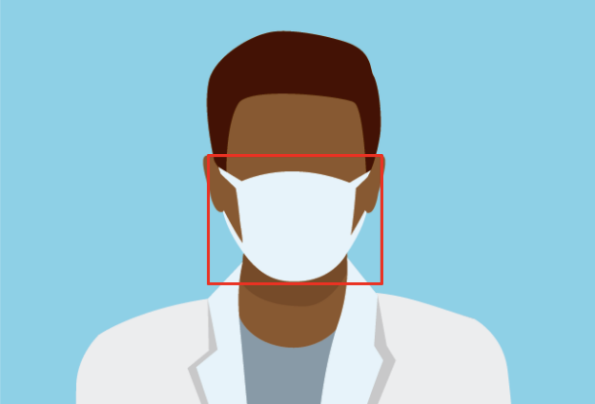
Figure 1: Representation of project goal
Introduction
Because of the current Coronavirus pandemic, having software that can detect masks can prove to be valuable to businesses that require customers and employees to wear masks. It can also have applications for companies and law enforcement agencies to be able to still identify people wearing masks. Instead of using a machine learning model to detect masks, we plan on taking advantage of edge detection and mask filtering to build a binary classification model that will determine if the subject is wearing a mask or not.
Technical approach
Data/Image Collection
Data collection is an important part of the project as this set of images will be scanned for face masks. The input image is to be of standard size and with similar face and mask positions. To generate standard images we will use a premade dataset containing people wearing/not wearing masks and cropping the images to a standard size based on face location. The images below serve as an example.
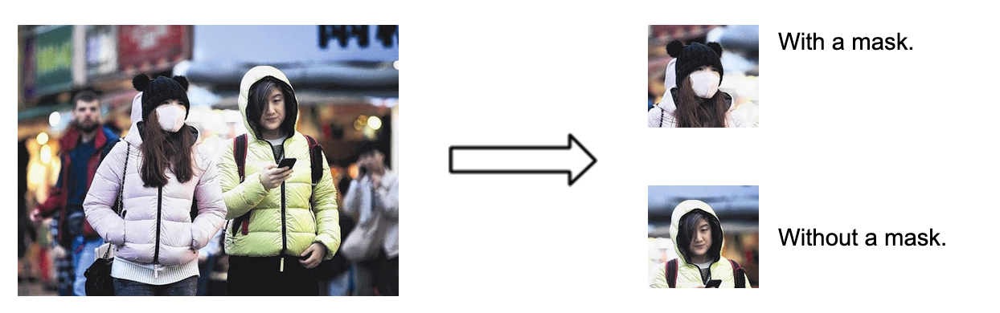
Figure 2: Showing the image and using a MouseCallback to define a mask bounding box
The original image set [1] was downloaded from Kaggle and contained 863 images along with a file of labels for each image. These original labels contain a bounding box around the entire face and whether this face is wearing a mask.
We created a data collection and labeling script which performs four essential functions:
Generate a 128x128 image by using the original data set bounding box around the entire face (similar to the example above).
On images with face masks, collect mouse clicks from the user representing the desired bounding box of the face mask.
Save new images and face mask labels to an h5py file, which is used as our data set.
This process is repeated until there are 50 images of people wearing masks and 50 images of people not wearing masks.
Code snippets and resulting images are seen below, with resulting bounding box labels overlaid on the image.
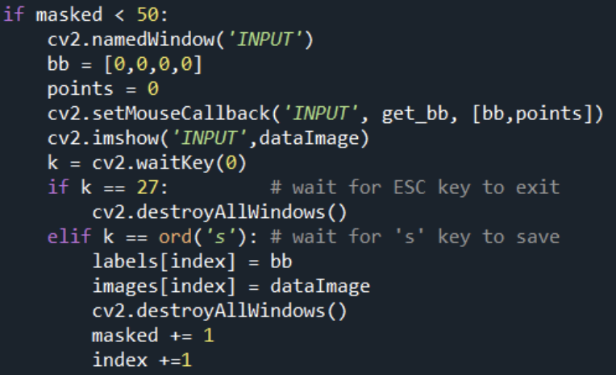
Figure 2. Bounding box around face using Haar Cascade
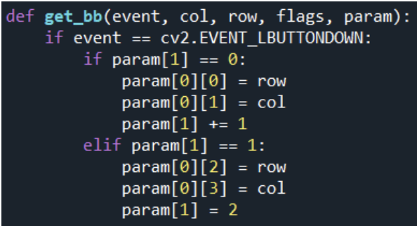
Figure 3: MouseCallback for collecting user defined bounding boxes
The Haar Cascade uses cascading classifiers to create what is known as Haar features. These features are then selected based on the strongest matches. The concept of cascading classifiers is something to consider going forward in our own feature detection.
The input images will also need two labels. The first label is whether or not the image contains a mask. The second is bounding box size and position for the mask. The second label will be used for evaluation, to determine the accuracy of the bounding box generated in our code.
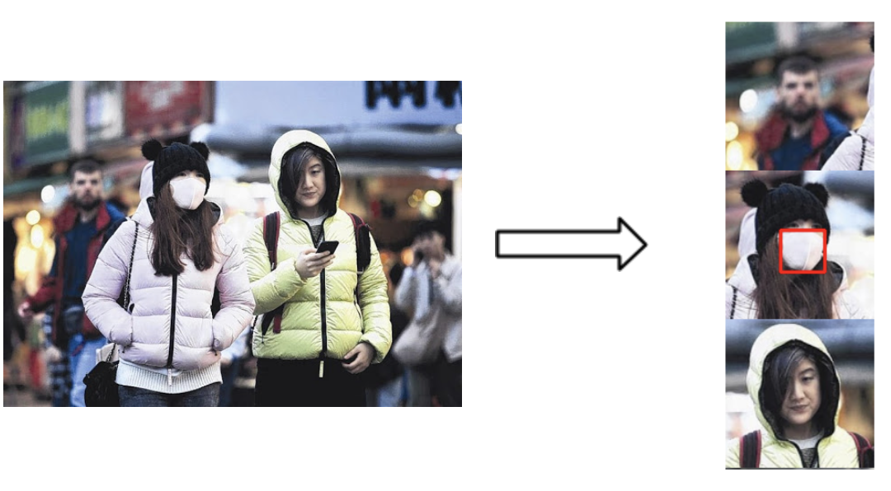
Figure 4: Example of our data set is seen to the right. A single original image, left, was used to generate three images for our data set, right.The bounding box was applied manually and saved as our label.
The label encoding we have employed includes a bounding box for each image, those with masks and without. The images with masks have a ‘valid’, user defined bounding box, and those without have an ‘invalid’ bounding box containing all zeros.
Mask Detection
There are eight steps to the mask detection process. In order they are as follows:
Convert the preprocessed image from dataset to grayscale
Generate a 17x17 Gaussian Kernel for applying blur to the grayscale image
Convolve the kernel with the image to get remove hard contrast areas
Apply the sobel edge detection filter to the image
Convert the sobel output to a binary image using a threshold
Use openCV findContours to identify clusters in the binary image
Use a contours to generate bounding boxes
Use post-processing algorithm to determine which bounding box has the mask contained in it
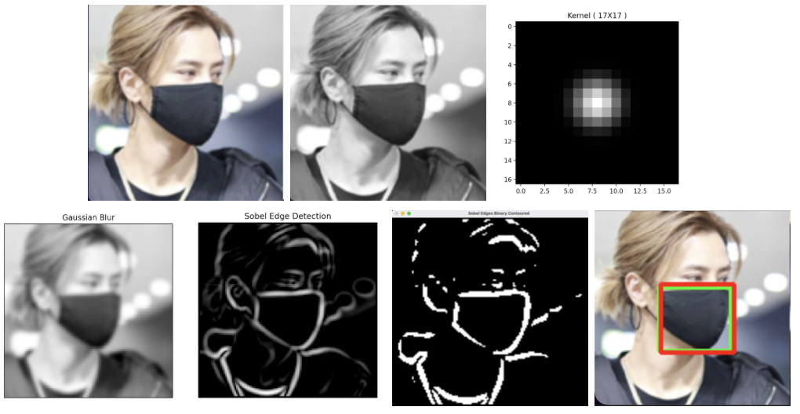
Figure 5: Progress Images in Bounding Box Generation Code
The approach we used for this project was to use a sequential combination of simple filtering techniques to find the edges of the mask in the image. The goal is to determine a bounding box around areas of interest in the image and to sort them based on the average intensity within the bounding box.
The first section of the process is getting the edges of the image. The code for this function first converts the input image to grayscale, applies a Gaussian blur kernel [3] of size 17x17 onto the image resulting in a blurred and padded version of the input image. Then, the sobel filter looks for dramatic changes in intensity, resulting in just the edges of the images. This grayscale edge image is then converted into a binary format by using a threshold that captures the most significant edges. All of these methods were implemented from scratch using numpy and matrix operations.
Using this binary image, we apply a contour finding method from openCV called findContours(). This method places bounding boxes around all continuous 255-valued pixels in the image, resulting in several boxes for varying sizes. By selecting the three largest bounding boxes found, and sorting them by average intensity of the binary image that they contain, the bounding box with the greatest intensity value is selected and displayed.
Tuning the parameters of the filters and determining a method for selecting certain contours took some time but the results discussed in the next section show that this process does yield some good results. This tuning was largely based on intuition and through trial and error.
The Binary Classifier
The goal of this project was of course to be able to classify images as having a mask or no mask. Our dataset is 50/50 split between images of people wearing masks and people wearing no masks. The implementation of the binary classifier begins with the end of the bounding box algorithm. By reading in the binary image that is enclosed in the bounding box, the classifier tests the average intensity of the bounded area against a threshold. If the average intensity is greater than the threshold, then the classification is 1 or mask present. If the average intensity is below the threshold, then there is no mask.
This classifier is not as effective as the bounding box method because of the simple fact that masks do not have a uniform intensity profile in our dataset. There are many masks with steep changes in brightness and hard edges inside them, there are also masks that are completely flat. Moving forward and in projects that consider a problem of this sort, a binary classifier that considers multiple aspects of the area enclosed by the bounding box, and not just the average intensity of a binary edge detection image, would certainly prove to be more effective.
Experiments and Results
Background
Using masks is important because it can help protect yourself and others in times of a pandemic such as COVID-19. An application of computer vision can be to identify if an individual is wearing a mask, and this type of program can be put to use practically in many circumstances. Classification is a popular machine learning tool which can be used to meet the objectives that we have set out to achieve, however, our approach will specifically not use machine learning as a crutch to achieve high accuracy so being a computer vision project we will not implement ML models on raw images and instead focus on tuning the computer vision functions to accurately be able to detect when a mask is being worn and when one is not.
Purpose
The purpose of this experiment is to develop a program that will classify images of people that are wearing masks or not wearing masks. The experiment will be designed to test the robustness of the program, explore the extent to which computer vision alone can be effective, and find opportunities to improve current classification methods with computer vision where applicable.
Requirements
The data set that will be used for this experiment should consist of headshot-type images that are of a person either wearing a mask or not wearing a mask. These images can be collected from the internet, created digitally by adding masks over headshots, or by taking photos of people wearing masks. Some images may be cropped and prepared using facial recognition algorithms that are discussed in the “Data/Image selection” section. The images should all be of a uniform size and file type, which can be easily imported and processed by the program.
Procedure
The experimental procedure will be straightforward itself:
The program receives input images
Processing and filtering takes place as described in the Technical Approach section
The program outputs labels for the images, being masked or not masked
Interpretations of Results
The program will output labels for classification (binary 1 or 0 for mask detection) and also a square that when overlaid onto the image should enclose the mask. The accuracy can be calculated trivially by counting the correct classifications and dividing that number by the total number of classifications, this will give a percentage of correct outputs. The precision of the box from the object detection however will be calculated by an Intersection over Union equation that uses the coordinates of the corners of the output box and the input/label box. This process is as follows:
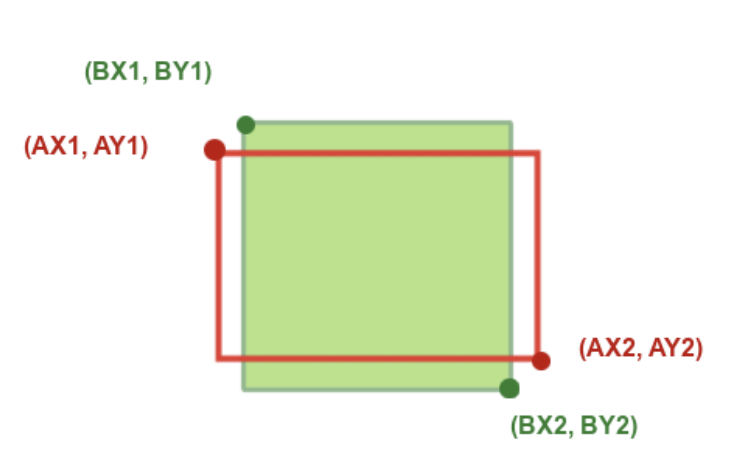
Figure 6: Reference image for Intersection over Union equation
Using the points above, the area of the intersecting rectangle can be calculated:
These two metrics that we defined, accuracy and precision, describe the data in only one way: how close the predictions are to the labels. Another way to see the effectiveness is by viewing the entire dataset complete with labels and predictions in a mosaic. The following code was used to append and stack the output images so that parameter tuning and accuracy/precision equation testing could be performed quickly with as much context as possible.
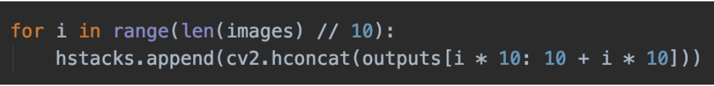
Figure 7: Mosaic Generating Code
The output mosaic encodes four pieces of information for each image: what the binary classification label is, where the bounding box label is, where the predicted bounding box is on the image, the precision of the program (by way of seeing the intersection of the two bounding boxes).
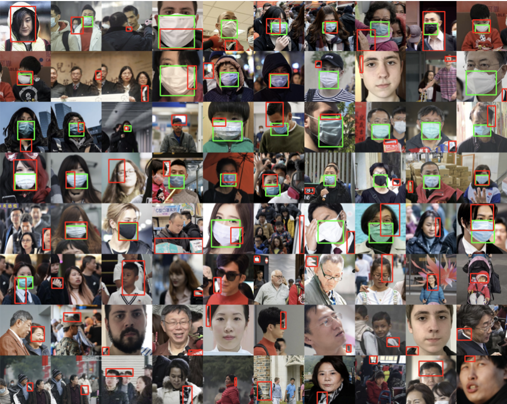
Figure 8: Mosaic Image of the Results
Qualitative Results
Processing from our program will produce two outputs, a label (mask: 1, no mask: 0), and a rectangle area of the image that it detects the object. Here is a representation of the output object detection box (in red) overlaid onto the labeled area of the mask. We determine the effectiveness of our methods through accuracy and precision calculations.
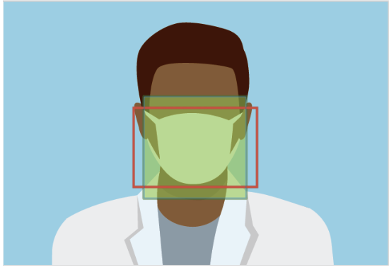
Figure 9: Example output from our program
Accuracy
Our project has defined accuracy to be the classification of the object, ie the boolean value associated with an image containing a mask or not. This means that if an image does have a mask and we determine that it does not have a mask, this is not an accurate result.
Accuracy proved to be the more difficult problem for us to solve. By using bounding boxes around sections of an image, it is a challenge to determine if the given section contains a mask. The reason for this is because there are many potential false positives within an image.
Precision
Precision is defined by the “Intersection over Union”, also known as the Jaccard Index [2], of two bounding boxes in a given image. The two boxes are from the original labels we defined along with our data set and from the filtering operations outlined in the approach section above. The images below show three examples from our results from lowest precision (left) to highest precision (right).
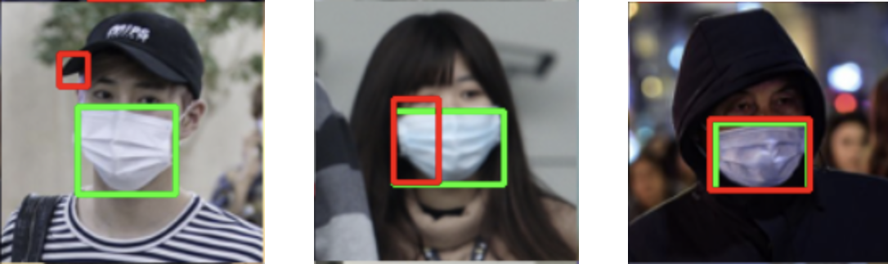
Figure 10: Precision of three images displayed from low to high
Green is the expected result. Red is our program’s result
We were able to achieve a precision of 24.2% over all images with masks, and a precision of 65% for the top ten best matches. Unfortunately, the results also show many imprecise boxes with zero overlap.
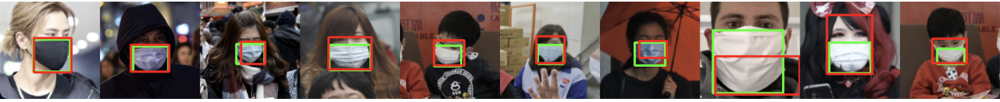
Figure 11: The 10 best matches displayed with label and predicted bounding boxes. Average precision: 65%
Discussion and Observations:
We have been able to achieve results in line with our original goals, although these results did fall short of our expected levels of accuracy and precision. From our testing, the level of complexity involved with both classification and bounding box generation are clear and more intensive filtering or other methods would be needed to attain the desired results. Also, our implementation is limited by intensity differences in the image. This produces great results with light colored masks surrounded by darker areas, but does not perform well under other conditions. Further refinement would be needed to improve upon these results.
To improve in further experiments or studies, binary classification should certainly consider multiple aspects of the image and weight them appropriately to achieve an accuracy greater than what “Ignorant.py” was able to achieve.
Conclusion
This report has described how we experimented with fundamental computer vision concepts and low level image transformations to manipulate and detect masks in an image. Using a face detection algorithm combined with the edge detection and mask filters, we believe we were able to be reasonably accurate in classifying images into two groups of mask and no mask. Our project faced challenges in classifying images where there was less contrast with the mask and the rest of the image. This project was an exercise in combining tools from the class that we implemented ourselves with advanced openCV functions that resulted in particularly interesting results for our face mask detection algorithm!